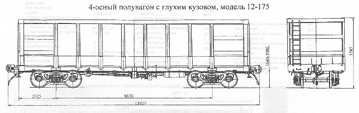

Назначение: для перевозки сыпучих, крупнокусковых, штучных и других грузов, не требующих защиты от атмосферных осадков
Параметры
| Номер проекта | 175.00.00.000 |
| Технические условия | |
| Модель вагона | 12-175 |
| Тип вагона | |
| Изготовитель | ГПО "Уралвагонзавод" |
| Грузоподъемность, т | 69 |
| Масса тары вагона, т | 25±0,5 |
| Нагрузка: статическая осевая, кН(тс) |
230(23,5) |
| погонная, кН/м(тс/м) | 70,14(7,18) |
| Объем кузова, м³ | 88 |
| Скорость конструкционная, км/ч | 120 |
| Габарит | 1-ВМ(0-Т) |
| База вагона, мм | 8650 |
| Длина, мм: по осям сцепления автосцепок |
13920 |
| по концевым балкам рамы | 12700 |
| Ширина максимальная, мм | 3165 |
| Высота от уровня верха головок рельсов, мм: до верхней обвязки |
3780 |
| до пола | 1230 |
| до оси автосцепки | 1040-1080 |
| Количество осей, шт. | 4 |
| Модель 2-осной тележки | 18-100 |
| Наличие переходной площадки | нет |
| Наличие стояночного тормоза | есть |
| Внутренние размеры кузова, мм: длина в свету по верхней обвязке |
12480 |
| ширина в свету по верхней обвязке | 2965 |
| высота | 2544 |
| Удельная материалоемкость,т/м3 | 0,284 |
| Удельный объем, м3/т | 1,17±0,02 |
| Наличие торцовых дверей | нет |
| Количество разгрузочных люков, шт. | нет |
| Площадь пола, м² | 37,0 |
| Год постановки на серийное производство | |
| Возможность установки буфера |